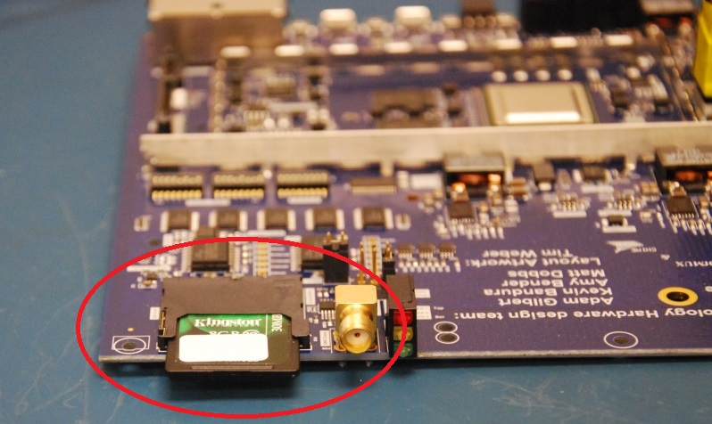
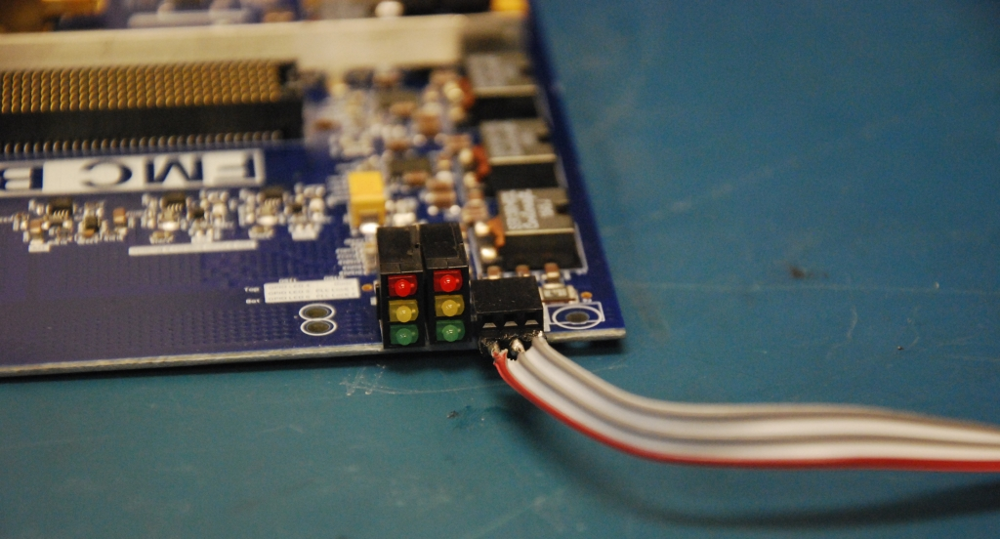
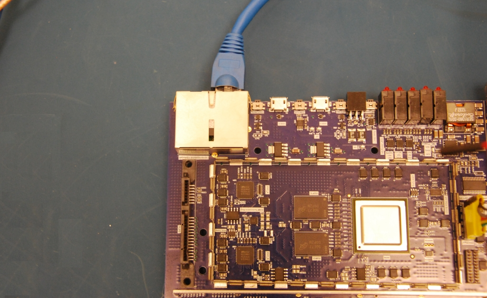
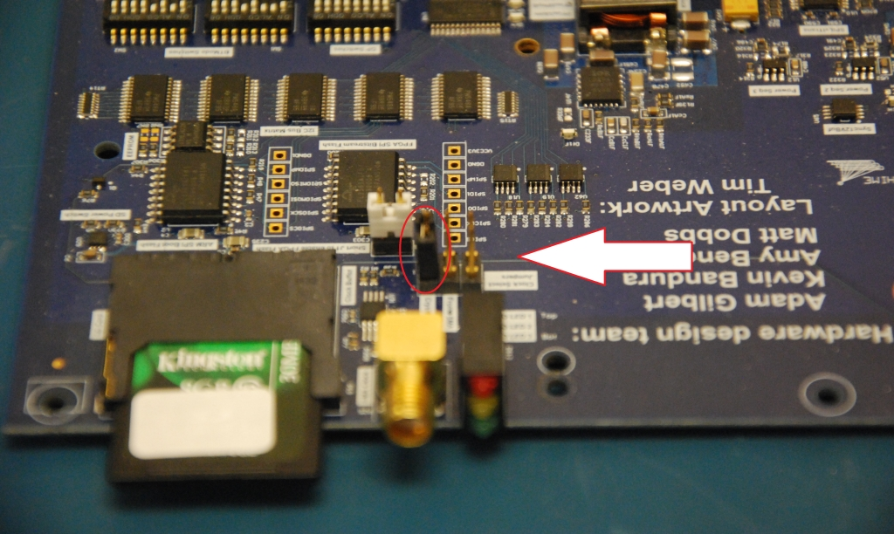
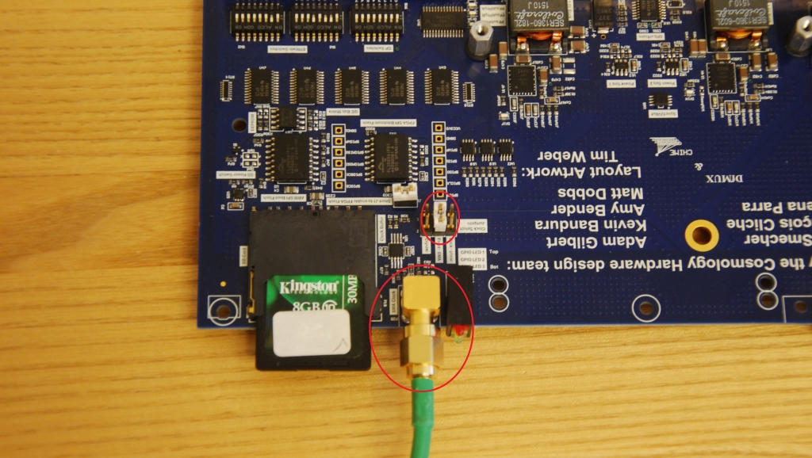
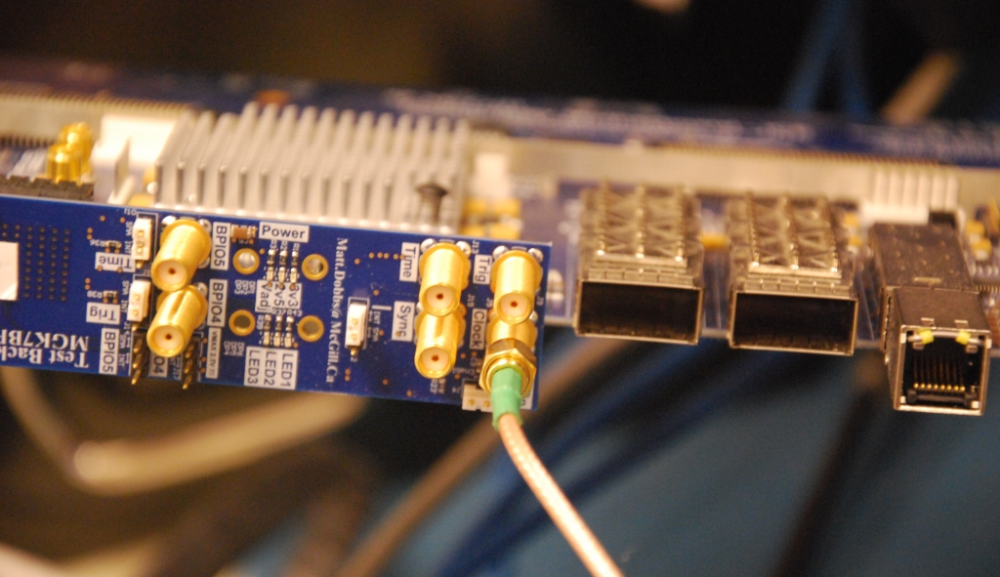
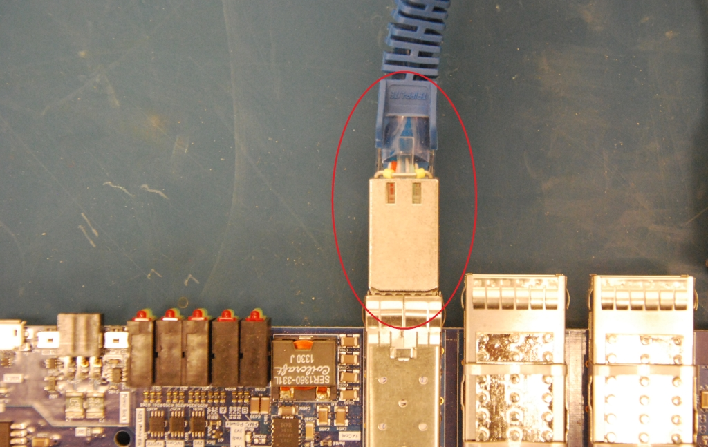
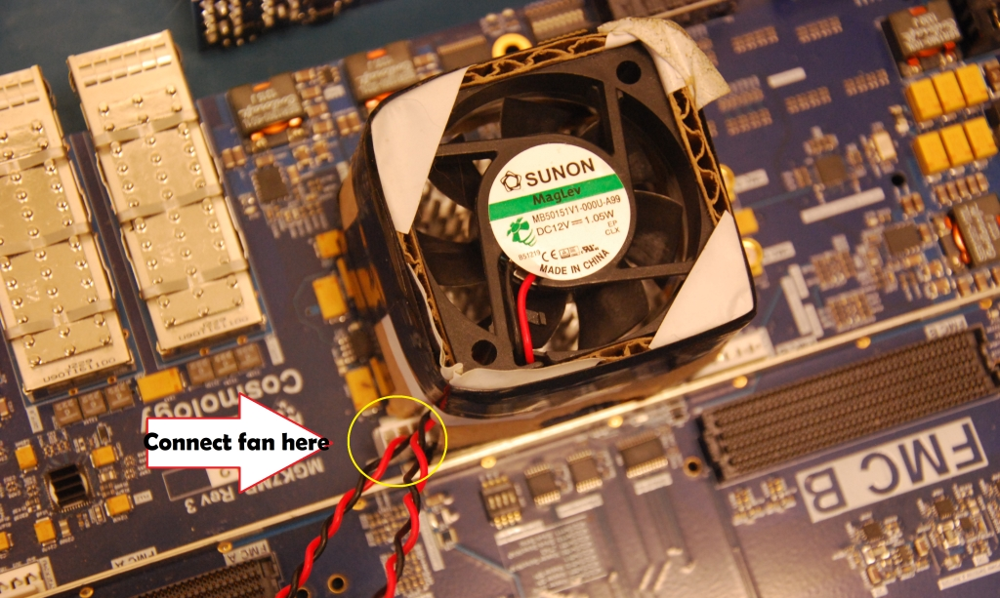
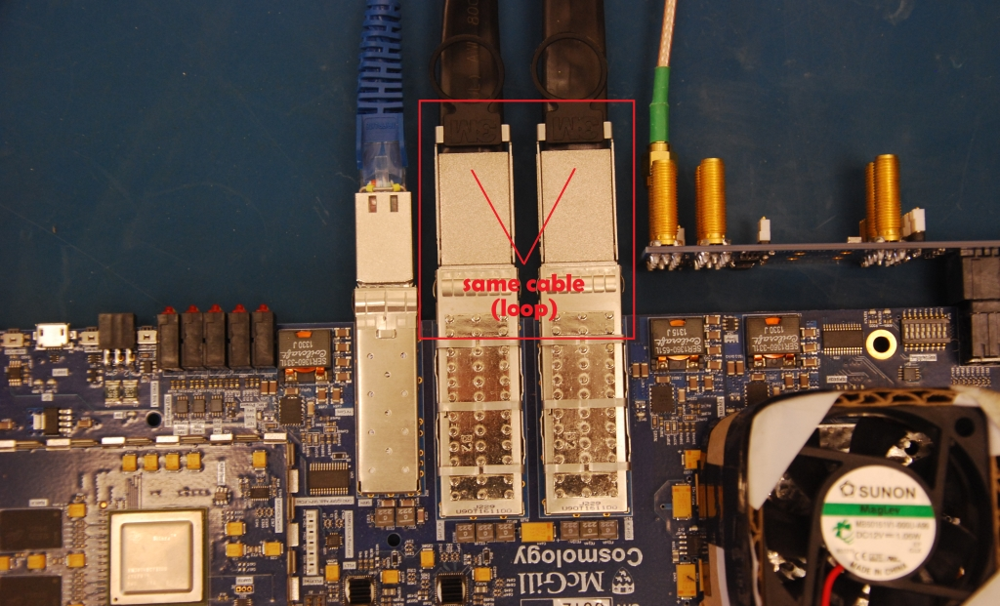

MGK7MB IceBoard Motherboard
Descriptions
The tests are divided in two phases: bench tests and networked tests.
Bench tests
These tests are performed on a standalone board, with no network, to make sure a defective board will not damage the rest of the setup. The tests are:
Visual inspection
Resistance at the test points
Power-up current
PLL programming
ARM memory, over RS-232
Networked tests
These tests are performed after the board is on the network. The tests are:
Power and temperature sensors
Serial number programmed into the EEPROM and flash
Presence of every I2C device
Boot from the backplane clock
FPGA programming
Basic mezzanine operation, then a ramp on its high-speed data lines
QSFP: the cable is detected over I2C and its EEPROM can be read
High-speed links (GTX), on a single-slot backplane
Running the tests
Tests of the MGK7MB IceBoard motherboard, in qc/MGK7MB/mgk7mb_test.py.
cd qc/MGK7MB
python mgk7mb_test.py
Testing Instructions

Motherboard
Inspection
Step 1: Is the FPGA heatsink securely attached?
Step 2: Are the FPGA heatsink pins cut near the stiffener?

Points of interest for steps 1 and 2
Step 3: Is the board stiffener installed, and the board reasonably flat?
Step 4: Are the PLL heatsinks attached?
Step 5: Does the arm shield fence look straight?

Points of interest for steps 3, 4 and 5
Step 6: Are the dipswitches set correctly?
Step 7: Are the jumpers set correctly?

Points of interest for steps 6 and 7
Step 8: Are the 90-pin Molex backplane connectors screwed down? (backside)
Step 9: Are the QSFP and SFP connectors soldered in place? (backside)
Step 10: Do all the buck converters have the additional hand-soldered capacitor? (backside)

Points of interest for steps 8, 9 and 10
Step 11: Do all the FMC power switches look well soldered?
Step 12: Is the blue patch wire in place and secured?

Points of interest for steps 11 and 12
Impedance
Set the board up as shown before measuring.

IceBoard with ground connection and one-slot backplane
Apply the red probe in this order: the +V supply, then the buck converters counter-clockwise. Probe location 10 in the diagram is the point used for every buck converter.

Impedance measurement test locations
Power-up
Connect the power cable to the backplane as shown, and check that all 9 power LEDs are on.

Power cable attached to the one-slot backplane

The nine power LEDs
PLL programming
Connect the PLL programming cable with the black marked side facing the SFP connectors. Both PLL lock lights must be on (green and yellow, on the right).

PLL programming dongle

PLL lock LEDs
Memory
Insert a valid SD card in the front slot. Connect the RS-232 dongle to the bottom pins on the front of the board, and the other end to a USB port on the test computer.


SD card plugged into the motherboard


RS-232 dongle attached to the motherboard
On the network
The remaining tests need an Ethernet cable in the second port from the edge, and a valid SD card in the front slot.


Ethernet cable attached to the ARM processor

SD card plugged into the motherboard
Sensors
No extra setup. Leave the mezzanines off the board.
Serial number
No extra setup.
I2C
No extra setup.
Backplane clock
Terminate the SMA clock jumper whenever it is not in use. That termination matters for step 3.
Step 1. Onboard crystal. Set the jumper to the crystal position (left).


Clock-select jumper in the onboard-crystal position
Step 2. Front-panel SMA. Set the jumper to the front SMA position (middle) and connect the SMA cable to the front-panel connector. The other end goes to the backplane.
Step 3. Backplane clock. Set the jumper back to its original position (right), and terminate the front-panel SMA cable.


Jumper in front-panel SMA mode, clock cable attached


Clock cable attached to the backplane
FPGA
This setup is also used for the mezzanine, ramp, QSFP and GTX tests. With the earlier setups already done, the menu can run this group in order and stop at the first failure.
Plug an SFP adapter into the motherboard and an Ethernet cable into the adapter. Mount the FPGA fan on the heatsink and attach its cable.


Ethernet cable and SFP adapter


Fan on the FPGA heatsink
Mezzanine
Mount both mezzanines. Use the extender cables so the mezzanine connectors are not mated and unmated on every board.
Ramp
Both mezzanines stay mounted, on the extender cables.
QSFP
Complete the FPGA setup first. Connect the QSFP cable in a loop. The GTX test uses the same loop.


QSFP cable in a loopback
GTX
Complete the FPGA setup and the QSFP loop first. Mezzanines may be loaded or left off.